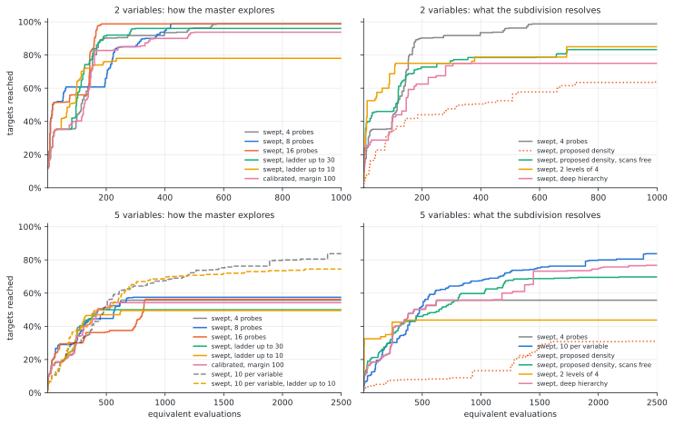
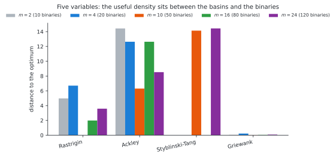
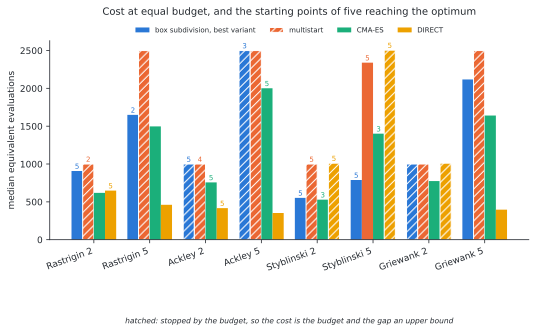
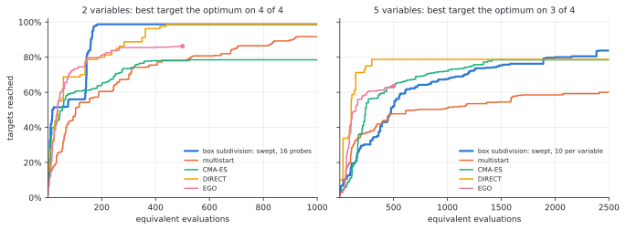
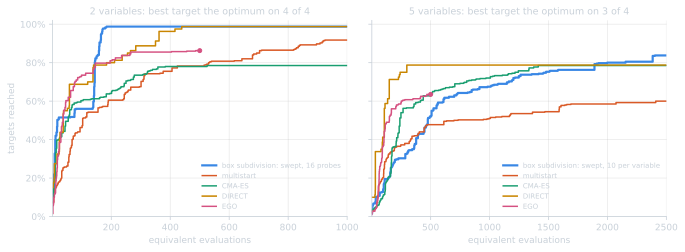
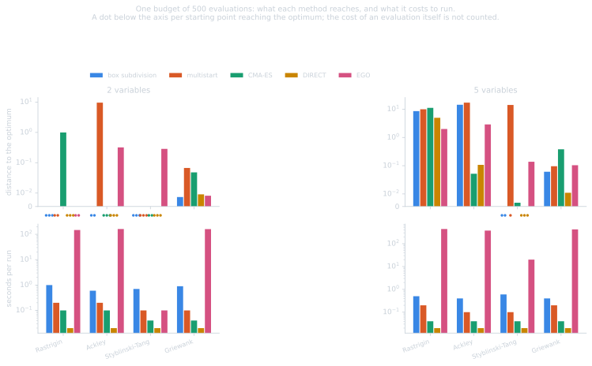
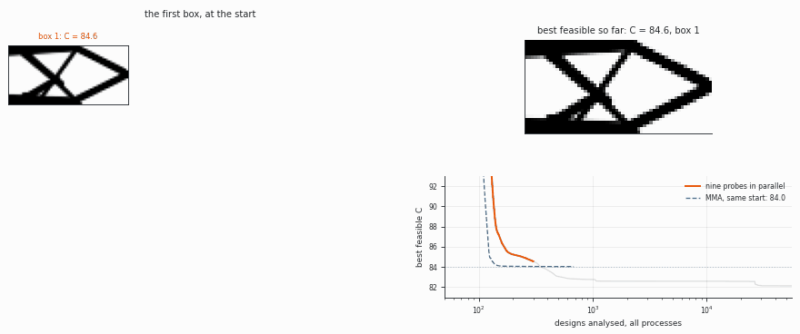
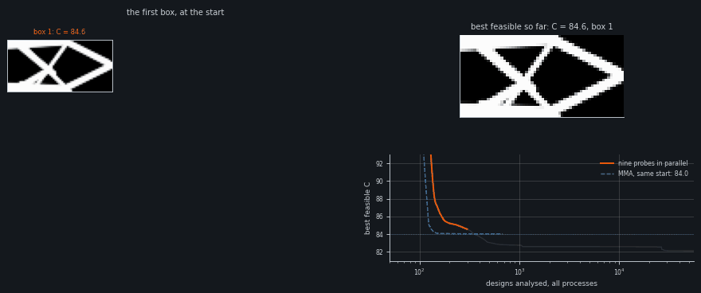

Results#
This chapter reports the numerical experiments: the method against the
exhaustive enumeration of the boxes, the variants of the method, the effect of
the subdivision density and of the convexity settings, a comparison with
baselines at two budgets, and an application to a topology optimization
problem. The test problems are described in annex A, the
baselines in annex B, and the tuning of the settings in
annex C. The analytic experiments are reproduced with
tox -e benchmark.
Important
All runs are given a fixed budget of equivalent evaluations. A run whose cost equals the budget was stopped by the budget and not by its own convergence criterion; its distance to the optimum is then an upper bound on what the same configuration reaches with more evaluations. Comparisons between such runs rank the progress made within the budget only. Cells whose cost is below the budget correspond to runs that terminated on their own criterion. Results that rest on truncated runs are marked as such.
Comparison with the enumeration of the boxes#
The reference is the enumeration, which solves the sub-problem of every box.
It is exhaustive and parallel and requires no cuts; the outer approximation is
of interest only if it reaches the same optimum with fewer sub-problems. Both
methods solve the same main problem with the same Benders formulation, so
that the comparison isolates the exploration strategy.
Table 1 reports the results on the Rastrigin function in two dimensions with \(10 \times 10 = 100\) boxes and eight starting points. The cost is counted in executions of the objective discipline.
formulation |
method |
objective |
boxes solved |
executions |
|---|---|---|---|---|
constraint |
enumeration |
\(0.0\) |
100 |
1427 |
constraint |
outer approximation |
\(0.0\) |
24 to 36 |
341 to 521 |
normalized |
enumeration |
\(0.0\) |
100 |
1267 |
normalized |
outer approximation |
\(0.0\) |
20 to 36 |
255 to 458 |
Table 1. Enumeration and outer approximation on Rastrigin, \(n = 2\).
The outer approximation reaches the same optimum after solving 20 to 36% of the boxes, at about one third of the cost of the enumeration. Both formulations reach the optimum from seven of the eight starting points. The normalized formulation is about 11% cheaper in enumeration, since its sub-problems are bounded by the box instead of restoring feasibility with respect to a box constraint, and its least expensive outer-approximation runs cost \(255\) executions against \(341\). It is retained in the following.
Variants of the method#
The master explores the design space through two mechanisms, and the subdivision adds a third setting:
the number of probes, i.e. of boxes proposed per master iteration, which in a swept run are also the rungs of the convexity ladder;
the upper bound of the convexity ladder, a low value keeping the master near the boxes favoured by its cuts and a high value moving it across the design space;
the subdivision density, either fixed, proposed by counting basins, or obtained through the multi-resolution encoding or the deep hierarchy.
Each variant changes one of these settings with respect to the swept
configuration SweptBoxSubdivisionSettings(): four probes, a ladder bounded by
the spread of the objective, and ten subdivisions per variable in two
dimensions and two in five. The calibrated configuration, with a convexity
margin of \(100\), is included as the reference that the sweep replaces.
The variants are compared through data profiles. For each problem a sequence of
twenty target values is defined, from a value reached early by every method down
to the global optimum. The profile of a configuration is the fraction of the
targets, over the four problems and five starting points, reached after a given
number of evaluations. The targets and profiles are computed with
gemseo-benchmark: the
TargetsGenerator uses the pooled histories of all runs of a given dimension,
variants and baselines together, so that the profiles of this section and of
the comparison with the baselines share the
same targets; the DataProfile uses the history of each run. The budget is
\(500\) equivalent evaluations per variable, a gradient counting as one
evaluation. The area under the profile, i.e. the mean fraction of targets
reached over the budget, is used to rank the variants.


Figure 1. Data profiles of the variants of the method.
variant |
2 variables: area |
at 250 |
at 1000 |
5 variables: area |
at 625 |
at 2500 |
|---|---|---|---|---|---|---|
swept, 4 probes |
\(0.87\) |
90% |
99% |
\(0.51\) |
56% |
56% |
calibrated, margin 100 |
\(0.83\) |
85% |
94% |
\(0.50\) |
54% |
54% |
swept, 8 probes |
\(0.88\) |
85% |
99% |
\(0.52\) |
55% |
57% |
swept, 16 probes |
\(0.92\) |
99% |
99% |
\(0.49\) |
38% |
56% |
swept, ladder up to 30 |
\(0.88\) |
92% |
96% |
\(0.47\) |
50% |
50% |
swept, ladder up to 10 |
\(0.73\) |
78% |
78% |
\(0.46\) |
49% |
50% |
swept, 10 per variable |
— |
— |
— |
\(0.64\) |
62% |
84% |
swept, 10 per variable, ladder up to 10 |
— |
— |
— |
\(0.63\) |
59% |
74% |
swept, proposed density |
\(0.51\) |
44% |
64% |
\(0.19\) |
8% |
31% |
swept, proposed density, scans free |
\(0.75\) |
75% |
83% |
\(0.58\) |
49% |
70% |
swept, 2 levels of 4 |
\(0.77\) |
75% |
85% |
\(0.43\) |
44% |
44% |
swept, deep hierarchy |
\(0.67\) |
68% |
75% |
\(0.60\) |
56% |
77% |
Table 2. Area under the data profile and fraction of targets reached at a quarter and at the whole budget. In two variables ten subdivisions per variable is the default, so the corresponding rows are omitted.
Probes. In two variables, sixteen probes reach \(99\%\) of the targets after \(250\) evaluations, against \(90\%\) for four probes, and reach the optimum of Rastrigin, Ackley and Styblinski-Tang from all starting points; this is the highest area of Table 2. Eight probes lie in between. In five variables with two subdivisions per variable, the area is between \(0.49\) and \(0.52\) whatever the number of probes: with two subdivisions per variable no box separates the basins of Rastrigin or Ackley, so that the choice among boxes does not matter. The values four, eight and sixteen avoid the degradation observed with six probes in annex D.
The cost of the master is not counted in the budget. Sixteen probes with ten subdivisions per variable in five dimensions (fifty binaries) were excluded from Table 2: half of the runs had not spent their \(2500\) evaluations after five hours of wall time, each probe requiring a mixed-integer solve, and the other half reached the optimum of Rastrigin and Ackley from one starting point of five, against two and three for four probes. This overhead is negligible only when an evaluation of the objective is expensive.
Upper bound of the ladder. A ladder bounded by \(10\) gives the fastest start in two variables, \(63\%\) of the targets after \(100\) evaluations against \(43\%\), but ends at \(78\%\), the optimum of Ackley being missed from all starting points. With ten subdivisions per variable in five dimensions the same bound gives \(37\%\) against \(30\%\) after \(250\) evaluations and ends at \(74\%\) against \(84\%\). A bound of \(30\) gives \(92\%\) against \(90\%\) after \(250\) evaluations in two variables and ends at \(96\%\) against \(99\%\). The low rungs propose the neighbouring boxes, so that a ladder restricted to them converges within the region of the starting point: speed is obtained at the expense of reliability.
Calibrated margin. The margin of \(100\) gives a lower area than the sweep in both dimensions, \(0.83\) against \(0.87\) and \(0.50\) against \(0.51\), and reaches the optimum of Ackley in two variables from three starting points of five against five.
Density. In five variables, ten subdivisions per variable is the best variant, with an area of \(0.64\) and a final fraction of \(84\%\), the highest of all configurations at this budget, baselines included. It reaches the optimum of Styblinski-Tang from five starting points of five, of Ackley from three and of Rastrigin from two; the density study of the next section reached Rastrigin from all three of its starting points, a difference that three and five starting points cannot resolve. The deep hierarchy follows with \(0.60\) and reaches the optimum of Ackley from four starting points of five.
Proposed density. Counting the basins costs between \(500\) evaluations (Styblinski-Tang) and more than ten thousand (Ackley) in two variables, and between \(1250\) and about twenty-five thousand in five, which exceeds the budget on most problems; a run charged with its scans is therefore last in both dimensions. With the scans free of charge, the proposed density still ranks below the fixed densities, \(0.75\) against \(0.87\) in two variables and \(0.58\) against \(0.64\) in five, the unresolved ladder of Ackley proposing more than sixty subdivisions per variable (see Proposed density).
Multi-resolution encoding. Two levels of four subdivisions give the fastest start in both dimensions, \(69\%\) of the targets after \(100\) evaluations in two variables and \(42\%\) after \(250\) in five, and the flattest profile afterwards, ending at \(85\%\) and \(44\%\). With the convexity swept it misses the optimum of Styblinski-Tang in five variables from all starting points, whereas the calibrated encoding of annex D reached it from one of three.
Density of the subdivision#
The number of boxes is the product of the subdivisions and grows exponentially with the dimension, whereas the master works with the one-hot binaries, whose number \(\sum_j m_j\) grows linearly. Five variables with ten subdivisions each give \(100\,000\) boxes and \(50\) binaries.
Table 3 reports the results in five variables with the adaptive
configuration, a budget of \(2500\) and three starting points: the median distance
to the optimum, the median cost, and the number of starting points from which
the optimum is reached.
\(m\) |
binaries |
boxes |
Rastrigin |
Ackley |
Styblinski-Tang |
Griewank |
|---|---|---|---|---|---|---|
2 |
10 |
\(32\) |
\(4.98\) · 823 |
\(14.43\) · 892 |
\(0.00\) · 458 · 2/3 |
\(0.06\) · 1016 |
4 |
20 |
\(10^3\) |
\(6.70\) · 714 |
\(12.63\) · 1277 |
\(0.00\) · 846 · 3/3 |
\(0.22\) · 1547 |
10 |
50 |
\(10^5\) |
\(0.00\) · 2103 · 3/3 |
\(6.30\) · 2500† |
\(14.14\) · 598 · 1/3 |
\(0.03\) · 2500† |
16 |
80 |
\(10^6\) |
\(1.99\) · 1706 |
\(12.63\) · 2500† |
\(0.00\) · 973 · 2/3 |
\(0.05\) · 2500† |
24 |
120 |
\(8 \cdot 10^6\) |
\(3.59\) · 1628 |
\(8.53\) · 2500† |
\(14.44\) · 1098 · 1/3 |
\(0.08\) · 2500† |
Table 3. Effect of the number \(m\) of subdivisions per variable, \(n = 5\). † stopped by the budget; the distance is an upper bound.


Figure 2. Effect of the subdivision density, \(n = 5\).
With ten subdivisions per variable, the optimum of Rastrigin in five dimensions is reached from all starting points for about \(2100\) evaluations; none of the baselines reached it at the budgets tested. With two or four subdivisions it is not reached.
The Rastrigin and Styblinski-Tang columns compare terminated runs. In the Ackley and Griewank columns, all runs from ten subdivisions upwards were stopped by the budget; these columns therefore rank the progress made within \(2500\) evaluations and do not show which density would perform best with a larger budget.
Beyond ten subdivisions the distance on Rastrigin increases, \(1.99\) at sixteen and \(3.59\) at twenty-four, while the cost decreases, which indicates that the runs terminate early. The cut model has \(\sum_j m_j\) coefficients, and a budget allows a few dozen cuts to identify them. A density is therefore usable as long as the number of binaries remains below the number of sub-problems the budget can pay for: fifty binaries are at this limit for a budget of about fifty sub-problems, eighty are beyond it. The number of boxes does not provide this criterion.
The density must also be sufficient to separate the minima: the basins of Rastrigin are about one unit apart over a range of ten, which requires ten subdivisions.
Conversely, refining beyond the basins degrades the results. Styblinski-Tang has two basins per variable and its optimum is reached with two and four subdivisions; with ten, the distance is \(14.14\) and the optimum is reached from one starting point of three. Ten subdivisions divide each basin into five boxes, and the value and sensitivity returned by a box that contains no minimum carry no information on the location of the minimum. The same behaviour is observed with the pure convexification and with three of the four trust-region radii of annex C, which attributes it to the subdivision rather than to the master.
The useful density thus lies between the one separating the basins and the one
limited by the binaries, and no single value suits the four problems: ten is the
best density for three of them and the worst for the fourth. The default of
benchmarks/baselines.py bounds the enumeration accordingly.
Proposed density#
The density can be proposed by counting the basins along jittered axial scans of each component, as described in the methodology. Each problem of Table 4 is given four times the budget implied by its proposed density, so that every run terminates on its own criterion; three starting points, median distance and median cost.
problem |
proposed \(m\) |
binaries |
distance |
cost |
reached |
compared with a fixed density |
|---|---|---|---|---|---|---|
Rastrigin |
10 ×5 |
50 |
\(0.00\) |
2103 |
3/3 |
equal to 10, better than 2 |
Styblinski-Tang |
2 ×5 |
10 |
\(0.00\) |
458 |
2/3 |
equal to 2, better than 10 |
|
10 10 1 1 1 |
23 |
\(0.00\) |
858 |
3/3 |
better than both |
Griewank |
19 13 11 7 9 |
59 |
\(0.064\) |
3463 |
1/3 |
equal to 2, worse than 10 |
Ackley |
63 ×5, unresolved |
314 |
\(12.75\) |
5372 |
0/3 |
worse than 10 |
Table 4. Proposed density, \(n = 5\).
Note
The costs of Table 4 exclude the scans that determine the density, which also evaluate the objective: about \(6100\) evaluations on Rastrigin in five variables, against \(2103\) for the run itself, and about twenty-five thousand on Ackley and Griewank. Charged to the budget of the variants, the proposed density ranks last in both dimensions. Table 4 measures the value of the proposed density, not the cost of proposing it.
On the problems whose basin count converged, the proposed density coincides with
the better of the two fixed densities, and on partly_multimodal it improves on
both: the optimum is reached from all starting points for \(858\) evaluations
against \(1554\) with ten subdivisions everywhere, the three unimodal components
being left undivided. The proposal selects ten subdivisions for Rastrigin and
two for Styblinski-Tang, which no single fixed value achieves.
The budget implied by the proposal, \(\sum_j m_j\) sub-problems, agrees with the
measured cost within a third: \(2000\) against \(2103\) on Rastrigin, \(400\) against
\(458\) on Styblinski-Tang and \(920\) against \(858\) on partly_multimodal.
On Ackley the basin count does not converge, and the proposed density of sixty-three performs worse than ten. Its ripples are one unit apart over a range of sixty-four, so that the count is correct but the corresponding subdivision is not useful: the global funnel, not the ripples, has to be resolved. The estimate reports itself as unresolved before the run, which identifies the proposals to be discarded; the same indicator directs such a problem to a hierarchy.
The estimate is based on the objective only. For a problem whose basins are separated by non-convex constraints it returns one subdivision per component and reports itself as converged, the objective having a single basin; annex D describes the constraint-aware count and its limitations.
Swept convexity#
The results of the density study were obtained with a convexity margin chosen for each problem, in the units of its objective. The alternative is to sweep the value: the parallel probes of the master carry a ladder of convexity values, a probe proposing a box already solved moves to the next rung, and the upper bound of the ladder is derived from the spread of the objective over the boxes already solved.
Table 5 compares fixed and swept convexity on Rastrigin and Ackley in two dimensions, whose objectives differ in scale by a factor of four, with ten subdivisions, a budget of \(1000\) and six starting points: median distance, median cost and number of starting points from which the optimum is reached.
convexity |
Rastrigin, range \(\approx 80\) |
Ackley, range \(\approx 22\) |
|---|---|---|
fixed, margin \(10\) |
\(0.000\) · 226 · 4/6 |
\(10.415\) · 208 · 1/6 |
fixed, margin \(100\) |
\(0.000\) · 543 · 6/6 |
\(0.000\) · 428 · 4/6 |
sweep, \(\kappa_{\max} = 100\) |
\(0.000\) · 491 · 6/6 |
\(0.000\) · 517 · 6/6 |
sweep, unbounded |
\(0.000\) · 489 · 6/6 |
\(0.000\) · 601 · 6/6 |
Table 5. Fixed and swept convexity, \(n = 2\).
No fixed margin reaches the optimum of both problems from all starting points: the margin of \(100\) retained by the tuning reaches Ackley from four of six. Both swept configurations reach both problems from all six, including the unbounded one, which is given no convexity value.
The sweep is less sensitive to its bound than the fixed method is to its margin. A bound ten times too large costs \(532\) evaluations against \(491\) on Rastrigin without changing the starting points from which the optimum is reached, since the low rungs remain in the ladder; it does, however, lose two starting points on Ackley. A margin ten times too small reaches the optimum from one starting point of six.
The additional rungs cost mixed-integer solves rather than evaluations, so the swept configurations cost about as much as the calibrated one. Table 5 covers two problems in two dimensions, on which the headroom of the unbounded form was chosen; it does not establish a general factor. A broader comparison is given by the variants, on four problems in two and five dimensions from five starting points, for the adaptive repair only. The full table and the derivation of the bound are in annex C.
Extensions#
Four extensions were evaluated at equal budget in five variables with \(2500\) equivalent evaluations: the subdivision of a subset of the variables, the multi-resolution encoding, the hierarchies of subdivisions, and the scores that rank a box. None of them was adopted as a default. The tables are given in annex D; the findings are the following.
Subdividing a subset of the variables improves the results when the multimodality is concentrated in that subset and degrades them otherwise. The least expensive configuration that reaches the optimum does not subdivide exactly the multimodal variables, because the number of binaries governs the cost.
The multi-resolution encoding reduces the number of binaries for a given resolution, sixteen subdivisions per variable for forty binaries instead of eighty, and improves the results on Styblinski-Tang, where the density study fails. Fewer and coarser levels perform better than more and finer ones.
The hierarchies address basins too broad for any affordable density: the deep hierarchy reaches the optimum of Ackley in five variables, which no other configuration does. The frontier hierarchy, the only one able to revise a choice, performs worst, because each node restarts a master and discards its cuts.
The positional weighting of the subdivisions performs worse than the unweighted metric, as for the trust region.
Several of these comparisons involve runs stopped by the budget, so annex D repeats the most sensitive one at two and four times the budget. The flat subdivision then reaches Ackley from two starting points of six instead of none, which reduces the advantage of the hierarchy to four against two; beyond that, a larger budget does not change the results, both configurations terminating on their own criteria.
Comparison with the baselines#
The method is used in its best variant of Table 2, which differs between the two dimensions: sixteen probes in two variables and ten subdivisions per variable in five, both with swept convexity, so that neither uses a convexity value chosen for these problems. The runs are those of the data profiles: four problems, five starting points, and \(500\) equivalent evaluations per variable with adjoint gradients. Each cell of Table 6 gives the median distance to the optimum, the median cost, and the number of starting points from which the optimum is reached.
problem |
\(n\) |
box subdivision, best variant |
multistart |
CMA-ES |
DIRECT |
|---|---|---|---|---|---|
Rastrigin |
2 |
\(0.00\) · 908 · 5/5 |
\(1.00\) · 1000 · 2/5 |
\(2.06\) · 619 · 0/5 |
\(0.00\) · 649 · 5/5 |
Ackley |
2 |
\(0.00\) · 1000 · 5/5 |
\(0.00\) · 1000 · 4/5 |
\(0.00\) · 757 · 5/5 |
\(0.00\) · 417 · 5/5 |
Styblinski-Tang |
2 |
\(0.00\) · 553 · 5/5 |
\(0.00\) · 1000 · 5/5 |
\(0.00\) · 529 · 3/5 |
\(0.00\) · 1011 · 5/5 |
Griewank |
2 |
\(0.007\) · 1000 · 0/5 |
\(0.010\) · 1000 · 0/5 |
\(0.030\) · 775 · 0/5 |
\(0.007\) · 1011 · 0/5 |
Rastrigin |
5 |
\(1.00\) · 1650 · 2/5 |
\(5.97\) · 2500 · 0/5 |
\(8.95\) · 1497 · 0/5 |
\(4.98\) · 461 · 0/5 |
Ackley |
5 |
\(0.00\) · 2500 · 3/5 |
\(8.01\) · 2500 · 0/5 |
\(0.00\) · 2001 · 5/5 |
\(0.11\) · 353 · 0/5 |
Styblinski-Tang |
5 |
\(0.00\) · 789 · 5/5 |
\(0.00\) · 2340 · 5/5 |
\(0.00\) · 1401 · 3/5 |
\(0.00\) · 2505 · 5/5 |
Griewank |
5 |
\(0.027\) · 2118 · 0/5 |
\(0.047\) · 2500 · 0/5 |
\(0.030\) · 1641 · 0/5 |
\(0.011\) · 397 · 0/5 |
Table 6. Box subdivision and baselines, \(500\) equivalent evaluations per variable.


Figure 3. Cost and number of optima reached for each method and problem.
Figure 4 shows the same runs as data profiles, with the targets of the variants. EGO is added with the \(500\) evaluations its surrogate model can afford; the end of its budget is marked on its curve, and all methods are compared at this budget in the next section.


Figure 4. Data profiles of the best variant and of the baselines.
\(n\) |
method |
area |
at a tenth |
at a quarter |
at a half |
at the budget |
|---|---|---|---|---|---|---|
2 |
box subdivision, 16 probes |
\(0.92\) |
56% |
99% |
99% |
99% |
2 |
multistart |
\(0.73\) |
46% |
64% |
78% |
92% |
2 |
CMA-ES |
\(0.73\) |
60% |
70% |
78% |
78% |
2 |
DIRECT |
\(0.90\) |
69% |
84% |
99% |
99% |
2 |
EGO, 500 evaluations |
— |
74% |
84% |
86% |
86%‡ |
5 |
box subdivision, 10 per variable |
\(0.64\) |
30% |
62% |
73% |
84% |
5 |
multistart |
\(0.51\) |
37% |
50% |
54% |
60% |
5 |
CMA-ES |
\(0.68\) |
54% |
67% |
76% |
78% |
5 |
DIRECT |
\(0.76\) |
75% |
79% |
79% |
79% |
5 |
EGO, 500 evaluations |
— |
59% |
— |
— |
64%‡ |
Table 7. Area under the data profile and fraction of targets reached at a tenth, a quarter, a half and the whole budget. ‡ At the EGO budget of \(500\), which in five variables is less than a quarter of the budget of the other methods; no area is given for EGO.
In two variables, the method with sixteen probes reaches \(99\%\) of the targets within a quarter of the budget (\(250\) evaluations), against \(84\%\) for DIRECT, which reaches the same fraction at half the budget. It reaches the optimum of Rastrigin, Ackley and Styblinski-Tang from all starting points. Its runs, however, continue to propose boxes after the optimum has been found and spend the whole budget on Ackley, whereas DIRECT terminates after \(417\) evaluations. The data profile measures how early a target is reached, the cost column when a run terminates, and the two criteria rank the methods differently.
In five variables, DIRECT has the highest fraction of targets for most of the budget: \(75\%\) after \(250\) evaluations, then \(79\%\) until the end. The method with ten subdivisions per variable is behind DIRECT and CMA-ES until \(1890\) evaluations and ends at \(84\%\). It is the only method that reaches the optimum of Rastrigin in five variables, from two starting points of five, and it reaches the optimum of Styblinski-Tang from all starting points for \(789\) evaluations, against \(2340\) for the multistart and \(2505\) for DIRECT. On Ackley, CMA-ES reaches the optimum from all starting points and the method from three; on Griewank no method reaches it, DIRECT obtaining the smallest distance at a lower cost.
The last target is the global optimum on all problems in two variables and on three of the four in five. On Griewank in five variables no run reaches the optimum, so the last target is the best value found by any run; it compares the methods with one another rather than with the optimum.
Warning
The best variant was selected on the same problems and runs on which it is scored, as the best of up to twelve variants measured once each, which biases the comparison in its favour. The sweep removes the convexity margin from the settings to be tuned, but not the number of probes or the density. A claim on the general performance of the method requires a separate set of test problems and a protocol fixed in advance.
The study takes a few hours, mostly for EGO, and resumes from its last state when interrupted:
python -m benchmarks.data_profiles # writes docs/_static/data_profiles.json
python docs/figures.py variant_profiles data_profiles results
Comparison at a budget of 500 evaluations#
The comparison above gives each method \(500\) equivalent evaluations per variable, which is large for industrial applications, and excludes Bayesian optimization, whose cost per iteration is cubic in the number of points: an EGO run of \(500\) evaluations takes about two and a half minutes on the test machine, against three seconds for the box subdivision. At larger budgets the comparison would measure the overhead of the surrogate rather than the quality of the method.
The same methods are therefore compared at a budget of \(500\) evaluations, which all of them can afford and which corresponds to an expensive objective, where a few hundred evaluations make up the whole budget. Table 8 gives, for four problems in two and five dimensions and three starting points, the median distance to the optimum and the number of starting points from which it is reached. The box subdivision uses the swept configuration, i.e. no tuned setting. The calibrated configuration gives the same distances on all rows and differs only in the number of starting points: \(2/3\) instead of \(3/3\) on Ackley in two dimensions and on Styblinski-Tang in five.
problem |
\(n\) |
box subdivision, swept |
multistart |
CMA-ES |
DIRECT |
EGO |
|---|---|---|---|---|---|---|
Rastrigin |
2 |
\(0.00\) · 3/3 · 457 |
\(0.00\) · 2/3 |
\(1.00\) |
\(0.00\) · 3/3 |
\(0.00\) · 2/3 |
Ackley |
2 |
\(0.00\) · 3/3 |
\(9.58\) |
\(0.00\) · 3/3 |
\(0.00\) · 3/3 |
\(0.32\) |
Styblinski-Tang |
2 |
\(0.00\) · 3/3 · 334 |
\(0.00\) · 3/3 |
\(0.00\) · 2/3 |
\(0.00\) · 3/3 |
\(0.29\) · 29‡ |
Griewank |
2 |
\(0.007\) |
\(0.067\) |
\(0.048\) |
\(0.009\) |
\(0.008\) |
Rastrigin |
5 |
\(8.57\) |
\(9.95\) |
\(11.20\) |
\(4.98\) |
\(1.99\) |
Ackley |
5 |
\(14.43\) |
\(17.06\) |
\(0.05\) |
\(0.11\) |
\(2.90\) |
Styblinski-Tang |
5 |
\(0.00\) · 3/3 |
\(14.14\) · 1/3 |
\(0.003\) |
\(0.00\) · 3/3 |
\(0.14\) · 219‡ |
Griewank |
5 |
\(0.061\) |
\(0.096\) |
\(0.381\) |
\(0.011\) |
\(0.104\) |
Table 8. Median distance to the optimum and number of starting points reaching it at a budget of \(500\) evaluations; a third number is the cost of a run that terminated before the budget. ‡ EGO terminated on its own criterion after \(29\) and \(219\) evaluations, its expected improvement having vanished.


Figure 5. Distance reached at \(500\) evaluations (top) and run time (bottom). The figure shows the calibrated configuration of the box subdivision; its run time depends on the machine, so that a configuration timed elsewhere cannot be added. The two configurations differ in the top row only in the two cells mentioned above.
At this budget EGO obtains the smallest distance on the hardest multimodal case, Rastrigin in five dimensions, \(1.99\) against \(4.98\) for DIRECT and \(8.57\) for the box subdivision, and on Griewank in two dimensions. With few evaluations and many basins, a surrogate model built on the whole history is more effective than the methods that do not reuse it. Its own computation time is, however, about a hundred times larger, \(444\) seconds against \(3\) for the box subdivision on the same problem, and is not counted in Table 8; it becomes negligible only for an objective that is expensive to evaluate.
The box subdivision reaches the optimum of Styblinski-Tang in two dimensions after \(334\) evaluations, terminating on its own criterion. In five dimensions it reaches it from all starting points but uses the whole budget, whereas the calibrated configuration terminates after \(458\) evaluations and reaches it from two. When the subdivision does not separate the basins, \(500\) evaluations are not sufficient: Rastrigin in five variables requires the \(2103\) evaluations of Table 3, and no method reaches its optimum at this budget.
Tables 6 and 8 address different situations: Table 8 the case of scarce evaluations, typical of industrial problems, and Table 6 the case of a budget large enough to afford the densities the box subdivision requires.
Application to the GGP short cantilever#
The analytic problems above are inexpensive, of low dimension and without constraints. The short cantilever of generalized geometry projection (GGP) is a constrained problem with adjoint gradients: \(18\) bars, each defined by the position of its centre, its angle, its length, its thickness and its density, i.e. \(108\) variables, whose compliance \(C\) is minimized under a volume fraction constraint of \(0.4\). As in the MATLAB implementation of the GGP paper, the objective of the disciplines is \(\log(C + 1)\); the results are given in terms of \(C\).
Setting#
The problem is solved with the preset short_cantilever_mna of the GGP package,
which reproduces the script GGP_main.m of the MATLAB implementation with the
Moving Node Approach (MNA): a cubic characteristic function of width \(1\), the
volume and the stiffness weighted by \(M_c\) and \(M_c^3\) respectively, where
\(M_c\) is the density of a bar, a lower-bound Kreisselmeier-Steinhauser
aggregation with \(k_a = 10\) followed by a smooth saturation, a penalization
exponent \(p = 3\) on the aggregated density with \(E_{\min} = 10^{-6}\), and
bounds of \([-2\pi, 2\pi]\) on the angles. The finite element mesh has
\(60 \times 30\) elements. MMA is used with the settings of mmasub.m: a move
limit of \(0.01\) and asymptotes within \(0.01\) of the current design. The initial
design is that of GGP_main.m, pairs of crossed bars at the nodes of a
\(3 \times 3\) grid, of length \(44.7\), thickness \(2\) and density \(0.5\).
The Python implementation was verified against a direct port of the MATLAB code:
for the same design the densities agree to \(3 \cdot 10^{-8}\) and the
compliances to all reported digits, provided the bounds of the variables are
derived from the mesh nodes, as in GGP_main.m.
The box subdivision subdivides the pose of every bar, i.e. the coordinates of its centre and its angle, into ten intervals, which gives \(54\) subdivided variables and \(540\) binaries. The length, thickness and density are continuous variables of each sub-problem, initialized at the values of the initial design. The convexity is swept, the master proposes nine boxes per iteration, which are solved in parallel, and each sub-problem is solved by MMA with at most \(1800\) iterations. Parallel evaluation of the probes requires the correction of merge request 139 of gemseo-bilevel-outer-approximation.
The multistart solves the same problem with MMA from 63 initial designs,
one per box solved by the box subdivision: the initial design of GGP_main.m
and 62 designs whose bar poses are drawn uniformly within the bounds,
the length, thickness and density being those of the initial design, as in the
sub-problems. Each run uses the settings above and at most \(1800\) iterations,
and the runs are distributed over four processes.
Results#
method |
\(C\) |
\(\log(C + 1)\) |
designs to the best |
designs evaluated |
|---|---|---|---|---|
MMA from the initial design of |
\(84.0\) |
\(4.443\) |
680 |
680 |
multistart of MMA, 63 initial designs |
\(83.0\) |
\(4.431\) |
9967¹ |
59322 |
box subdivision, 9 probes, 63 boxes |
\(82.1\) |
\(4.420\) |
31070 |
55995 |
Table 9. Short cantilever: best feasible compliance, number of designs evaluated until the best one was found, and total number of designs evaluated. ¹ Designs of the runs from initial designs 0 to 8, the best being found by run 8; the runs are executed in parallel.


Figure 6. Box subdivision on the short cantilever, by round of the master. Left: the boxes of the current round during their local solutions, infeasible designs marked with an asterisk. Right: the best feasible design so far, and the best compliance against the number of designs evaluated by all processes, compared with MMA from the same initial design.
MMA from the initial design of GGP_main.m converges to the symmetric design
reported in the GGP paper, with \(C = 84.0\). The multistart reaches \(C = 83.0\)
from three of its \(63\) initial designs (runs 8, 62 and 34); seven runs end below
the MMA solution from the initial design of GGP_main.m, which is run 0, the
median run ends at \(95.6\), and eight runs are stopped at \(1800\) iterations. It
took \(3.9\) hours of wall time on four processes, against \(2.0\) hours for the box
subdivision on the same four cores. The box subdivision improves on the MMA
solution in its first box, after \(349\) designs, and reaches \(C = 82.1\) in its
\(32\)nd box, after \(31\,070\) designs and about seventy minutes on four cores. The
corresponding layout is not symmetric: the lower diagonal bars meet the bottom
chord at a single node instead of crossing. The ten best of the 63 boxes have a
compliance between \(82.1\) and \(82.4\) and the median box \(83.8\), so that the best
value is not attained by an isolated box.
The result depends on the MMA settings. With a move limit of \(0.1\) and
asymptotes allowed to widen, the direct port of the MATLAB code converged to
compliances between \(84\) and \(128\) from initial designs differing by \(10^{-12}\)
to \(10^{-9}\); with the settings of mmasub.m, all these runs converged to
\(84.4\). The latter settings are therefore used throughout.
Warning
Each row of Tables 1 to 9 corresponds to the stated number of runs only, and
the box subdivision was configured on the problems it is evaluated on: the
density, the number of probes and, for the cantilever, the number of MMA
iterations per box. The cantilever drivers are in benchmarks/cantilever/; they
are run from the GGP repository, in its environment with the legacy FEniCS
version, and are not part of the test suite.
The conclusions drawn from these results are discussed in the conclusion.